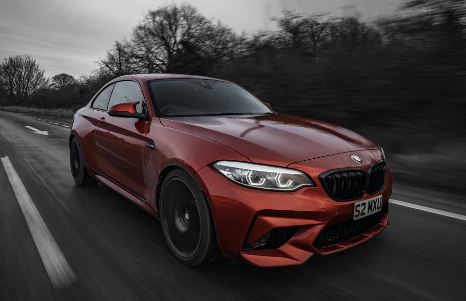

A NEW ERA OF DRIVING PLEASURE.
CHOOSE THE FUL ELECTRIC
A NEW ERA OF DRIVING PLEASURE.
CHOOSE THE FUL ELECTRIC
The special fascination of the BMW Group not only lies in its products and technology, but also in the company’s history, written by inventors, pioneers and brilliant designers. Today, the BMW Group, with more than 30 production and assembly facilities as well as a global sales network, is the world’s leading manufacturer of premium automobiles and motorcycles, and provider of premium financial and mobility services.
The BMW Group sets trends in production technology and sustainability as an innovation leader with an intelligent material mix, a technological shift towards digitalisation and resource-efficient production. At the same time, flexibility and continuous optimisation of value chains ensure competitiveness.
Long-term thinking and responsible action are the basis of economic success. Ecological and social sustainability, comprehensive product responsibility and a clear commitment to conserving resources are therefore an integral part of our strategy

Sheer driving please
From $60.000
newThe BMW 8 Series models are characterized by revolutionary design, technical excellence and unparalleled luxury.
From $75.000
newAvailable in three body styles – coupe, convertible and grand coupe – the BMW 4 Series is characterized by its distinctive design.
From $75.000
BMW i models lead into the future of mobility. Founded in 2010, BMW i creates electric and hybrid vehicles.
From $60.000
newThe BMW 8 Series models are characterized by revolutionary design, technical excellence and unparalleled luxury.
From $75.000
newAvailable in three body styles – coupe, convertible and grand coupe – the BMW 4 Series is characterized by its distinctive design.
From $75.000
BMW i models lead into the future of mobility. Founded in 2010, BMW i creates electric and hybrid vehicles.
"Changing Lanes” is the official podcast of BMW. Featuring new episodes each week, in which our hosts take you on exciting journeys and talk about innovative technologies, lifestyle, design, cars and more. Find and subscribe to Changing Lanes on all major podcasting platforms.


If you have any questions or suggestions for cooperation or you want to buy a car - out the form below